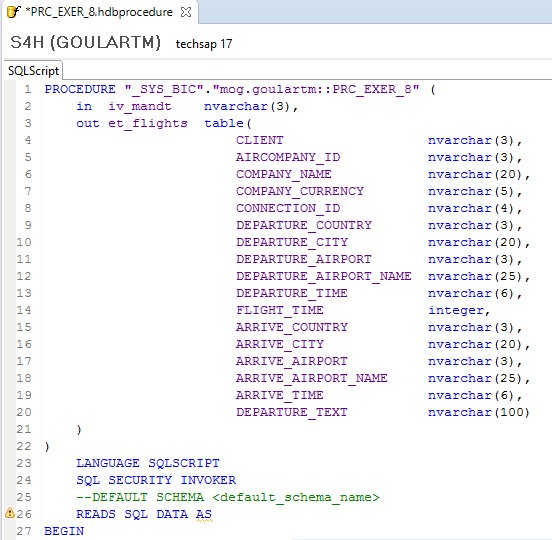

Exercício 8 - HANA
Contexto
Criar uma procedure que traga dados de conexões (SPFLI) com dados de partida e chegada dos voos. Mesma lógica do Exercício 3, porém fazendo todas as lógicas dentro da procedure (não utilizar as views CA_EXER_1 e CA_EXER_2, fazer toda lógica dentro da procedure).
A view deve retornar as seguintes informações:
| Campo | Tipo de Dados | Origem |
|---|---|---|
| CLIENT | nvarchar(3) | SPFLI-MANDT |
| AIRCOMPANY_ID | nvarchar(3) | SPFLI-CARRID |
| COMPANY_NAME | nvarchar(20) | SCARR-CARRNAME |
| COMPANY_CURRENCY | nvarchar(5) | SCARR-CURRCODE |
| CONNECTION_ID | nvarchar(4) | SPFLI-CONNID |
| DEPARTURE_COUNTRY | nvarchar(3) | SPFLI-COUNTRYFR |
| DEPARTURE_CITY | nvarchar(20) | SPFLI-CITYFROM |
| DEPARTURE_AIRPORT | nvarchar(3) | SPFLI-AIRPFROM |
| DEPARTURE_AIRPORT_NAME | nvarchar(25) | SAIRPORT-NAME |
| DEPARTURE_TIME | nvarchar(6) | SPFLI-DEPTIME |
| FLIGHT_TIME | integer | SPFLI-FLTIME |
| ARRIVE_COUNTRY | nvarchar(3) | SPFLI-COUNTRYTO |
| ARRIVE_CITY | nvarchar(20) | SPFLI-CITYTO |
| ARRIVE_AIRPORT | nvarchar(3) | SPFLI-AIRPTO |
| ARRIVE_AIRPORT_NAME | nvarchar(25) | SAIRPORT-NAME |
| ARRIVE_TIME | nvarchar(6) | SPFLI-ARRTIME |
| DEPARTURE_TEXT | nvarchar(100) | Calculated Column |
| Calculated Column | Valor | Tipo |
|---|---|---|
| DEPARTURE_TEXT | Concatenar campos DEPARTURE_COUNTRY + DEPARTURE_CITY + DEPARTURE_AIRPORT_NAME + DEPARTURE_TIME | NVARCHAR(100) |
Calculation View
Crie uma nova Stored Procedure do tipo Text (.hdbprocedure):
Defina os parâmetros de entrada e de saída da procedure:
in iv_mandt nvarchar(3),
out et_flights table(
CLIENT nvarchar(3),
AIRCOMPANY_ID nvarchar(3),
COMPANY_NAME nvarchar(20),
COMPANY_CURRENCY nvarchar(5),
CONNECTION_ID nvarchar(4),
DEPARTURE_COUNTRY nvarchar(3),
DEPARTURE_CITY nvarchar(20),
DEPARTURE_AIRPORT nvarchar(3),
DEPARTURE_AIRPORT_NAME nvarchar(25),
DEPARTURE_TIME nvarchar(6),
FLIGHT_TIME integer,
ARRIVE_COUNTRY nvarchar(3),
ARRIVE_CITY nvarchar(20),
ARRIVE_AIRPORT nvarchar(3),
ARRIVE_AIRPORT_NAME nvarchar(25),
ARRIVE_TIME nvarchar(6),
DEPARTURE_TEXT nvarchar(100)

Faça uma query para trazer os dados das conexões (SAPABAP1.SPFLI):
lt_connections =
select
MANDT ,
CARRID ,
CONNID ,
COUNTRYFR ,
CITYFROM ,
AIRPFROM ,
DEPTIME ,
FLTIME ,
COUNTRYTO ,
CITYTO ,
AIRPTO ,
ARRTIME
from "SAPABAP1"."SPFLI"
where MANDT = :iv_mandt
;

Traga os dados de aeroportos (SAPABAP1.SAIRPORT):
lt_airports =
select
MANDT ,
ID as AIRPID ,
NAME
from "SAPABAP1"."SAIRPORT"
where MANDT = :iv_mandt
and ID in ( select distinct AIRPFROM from :lt_connections
union distinct
select distinct AIRPTO from :lt_connections )
;
Traga os dados de companhias aéreas (SAPABAP1.SCARR):
lt_companies =
select
MANDT ,
CARRID ,
CARRNAME ,
CURRCODE
from "SAPABAP1"."SCARR"
where MANDT = :iv_mandt
and CARRID in ( select distinct CARRID from :lt_connections )
;
Faça a junção das 3 entidades, compondo os dados com os campos utilizados pela sua estrutura de saída da procedure:
lt_connections_join =
select
connection.MANDT as CLIENT ,
connection.CARRID as AIRCOMPANY_ID ,
company.CARRNAME as COMPANY_NAME ,
company.CURRCODE as COMPANY_CURRENCY ,
connection.CONNID as CONNECTION_ID ,
connection.COUNTRYFR as DEPARTURE_COUNTRY ,
connection.CITYFROM as DEPARTURE_CITY ,
connection.AIRPFROM as DEPARTURE_AIRPORT ,
airport_from.NAME as DEPARTURE_AIRPORT_NAME ,
connection.DEPTIME as DEPARTURE_TIME ,
connection.FLTIME as FLIGHT_TIME ,
connection.COUNTRYTO as ARRIVE_COUNTRY ,
connection.CITYTO as ARRIVE_CITY ,
connection.AIRPTO as ARRIVE_AIRPORT ,
airport_to.NAME as ARRIVE_AIRPORT_NAME ,
connection.ARRTIME as ARRIVE_TIME ,
concat( connection.COUNTRYFR, concat( '/',
concat( connection.CITYFROM, concat( ' - ',
concat( airport_from.NAME, concat( ' - ',
TO_NVARCHAR( to_time( connection.DEPTIME ) , 'HH:mm:SS' ) )
) ) ) ) ) as DEPARTURE_TEXT
FROM :lt_connections as connection
inner join :lt_companies as company
on company.MANDT = connection.MANDT
and company.CARRID = connection.CARRID
inner join :lt_airports as airport_from
on airport_from.MANDT = connection.MANDT
and airport_from.AIRPID = connection.AIRPFROM
inner join :lt_airports as airport_to
on airport_to.MANDT = connection.MANDT
and airport_to.AIRPID = connection.AIRPTO
;
Preencha a estrutura de saída da procedure:
et_flights =
select * from :lt_connections_join ;
Salve, ative e teste a procedure.